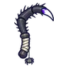

แมงมุมใยเรือง
มอนธาตุพิษ Lv 36–44
เจอที่
| แมพ | โซน | Lv | ภูมิภาค |
|---|---|---|---|
| ป่าเห็ดชั้นใน | 36–42 | ป่ากองไฟ | |
| ป่าเห็ดชั้นใน | วงเห็ดลึก | 42–44 | ป่ากองไฟ |
| ต้นเห็ดยักษ์ล้ม | 36–42 | ป่ากองไฟ | |
| ต้นเห็ดยักษ์ล้ม | ใต้หมวกเห็ดล้ม | 42–44 | ป่ากองไฟ |
| สระรากเห็ดเรืองแสง | 36–42 | ป่ากองไฟ | |
| สระรากเห็ดเรืองแสง | ม่านใยเห็ด | 42–44 | ป่ากองไฟ |
| หอรากมืด (Dark Root) | โพรงเห็ดเรือง | 14–23 | |
| หอรากมืด (Dark Root) | รังผีเสื้อกลางคืน | 52–61 |
ค่าสถานะตามเลเวล
| Lv | HP | ATK | DEF | MDEF | EXP | Job |
|---|---|---|---|---|---|---|
| 36 | 4,032 | 63–94 | 10 | 9 | 48 | 36 |
| 40 | 5,346 | 75–113 | 11 | 10 | 53 | 40 |
| 44 | 7,080 | 82–123 | 12 | 11 | 57 | 43 |
ตีด้วยธาตุไหนดี
แรงขึ้น: —
เบาลง: มืด ×0.5 อมตะ ×0.5 พิษ ×0
วัตถุดิบที่ดรอป
| ของ | โอกาส | |
|---|---|---|
| ใยแมงมุมเรืองแสง | 55% | 1 ชิ้น (15% ได้ 2) |
อุปกรณ์ที่ดรอป (4)
| ของ | โอกาส |
|---|---|
| 0.25% | |
| 0.25% | |
| 0.12% | |
 เคียวคู่ขาแมงมุม | 0.06% |
สกิล
ยิงกระจาย (Lv 25+) · ยิงกระจาย (Lv 60+) · ปาตกใส่ (Lv 60+)